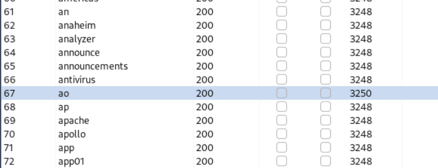
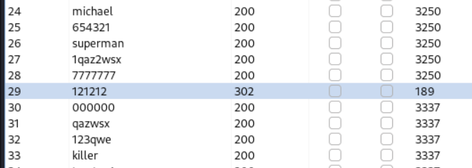

Cyber Security
Cyber Security
Authentication vulnerabilities¶
Authentication vulnerabilities can allow attackers to gain access to sensitive data and functionality. They also expose additional attack surface for further exploits. For this reason, it’s important to learn how to identify and exploit authentication vulnerabilities, and how to bypass common protection measures.
Brute-force attacks¶
A brute-force attack is when an attacker uses a system of trial and error to guess valid user credentials. These attacks are typically automated using wordlists of usernames and passwords. Automating this process, especially using dedicated tools, potentially enables an attacker to make vast numbers of login attempts at high speed.
Brute-forcing is not always just a case of making completely random guesses at usernames and passwords. By also using basic logic or publicly available knowledge, attackers can fine-tune brute-force attacks to make much more educated guesses. This considerably increases the efficiency of such attacks. Websites that rely on password-based login as their sole method of authenticating users can be highly vulnerable if they do not implement sufficient brute-force protection.
Note
It’s also possible to brute-force the login using a single cluster bomb attack. However, it’s generally much more efficient to enumerate a valid username first if possible.
Brute-forcing usernames¶
Usernames are especially easy to guess if they conform to a recognizable pattern, such as an email address. For example, it is very common to see business logins in the format firstname.lastname@somecompany.com. However, even if there is no obvious pattern, sometimes even high-privileged accounts are created using predictable usernames, such as admin or administrator.
During auditing, check whether the website discloses potential usernames publicly. For example, are you able to access user profiles without logging in? Even if the actual content of the profiles is hidden, the name used in the profile is sometimes the same as the login username. You should also check HTTP responses to see if any email addresses are disclosed. Occasionally, responses contain email addresses of high-privileged users, such as administrators or IT support.
Brute-forcing passwords¶
Passwords can similarly be brute-forced, with the difficulty varying based on the strength of the password. Many websites adopt some form of password policy, which forces users to create high-entropy passwords that are, theoretically at least, harder to crack using brute-force alone. This typically involves enforcing passwords with:
A minimum number of characters
A mixture of lower and uppercase letters
At least one special character
However, while high-entropy passwords are difficult for computers alone to crack, we can use a basic knowledge of human behavior to exploit the vulnerabilities that users unwittingly introduce to this system. Rather than creating a strong password with a random combination of characters, users often take a password that they can remember and try to crowbar it into fitting the password policy. For example, if mypassword is not allowed, users may try something like Mypassword1! or Myp4$$w0rd instead.
In cases where the policy requires users to change their passwords on a regular basis, it is also common for users to just make minor, predictable changes to their preferred password. For example, Mypassword1! becomes Mypassword1? or Mypassword2!.
This knowledge of likely credentials and predictable patterns means that brute-force attacks can often be much more sophisticated, and therefore effective, than simply iterating through every possible combination of characters.
Username enumeration¶
Username enumeration is when an attacker is able to observe changes in the website’s behavior in order to identify whether a given username is valid.
Username enumeration typically occurs either on the login page, for example, when you enter a valid username but an incorrect password, or on registration forms when you enter a username that is already taken. This greatly reduces the time and effort required to brute-force a login because the attacker is able to quickly generate a shortlist of valid usernames.
While attempting to brute-force a login page, you should pay particular attention to any differences in:
Status codes: During a brute-force attack, the returned HTTP status code is likely to be
the same for the vast majority of guesses because most of them will be wrong. If a guess returns a different status code, this is a strong indication that the username was correct. It is best practice for websites to always return the same status code regardless of the outcome, but this practice is not always followed.
Error messages: Sometimes the returned error message is different depending on whether
both the username AND password are incorrect or only the password was incorrect. It is best practice for websites to use identical, generic messages in both cases, but small typing errors sometimes creep in. Just one character out of place makes the two messages distinct, even in cases where the character is not visible on the rendered page.
Length Response and Response times: If most of the requests were handled with a
similar response time, any that deviate from this suggest that something different was happening behind the scenes. This is another indication that the guessed username might be correct. For example, a website might only check whether the password is correct if the username is valid. This extra step might cause a slight increase in the response time. This may be subtle, but an attacker can make this delay more obvious by entering an excessively long password that the website takes noticeably longer to handle.
Note
Enumerate username
Enumeration of usernames througth a dictionnary, using a excessively long password.
With an excessively long password the length of the response of a correct username is a little bit longer than the bad ones.
Note
Brute force Passwords
When providing a valid username, the status code of the response change when the correct password is tested.

{kind=link}
{kind=link}
Bypassing two-factor authentication¶
At times, the implementation of two-factor authentication is flawed to the point where it can be bypassed entirely.
If the user is first prompted to enter a password, and then prompted to enter a verification code on a separate page, the user is effectively in a “logged in” state before they have entered the verification code. In this case, it is worth testing to see if you can directly skip to “logged-in only” pages after completing the first authentication step. Occasionally, you will find that a website doesn’t actually check whether or not you completed the second step before loading the page.